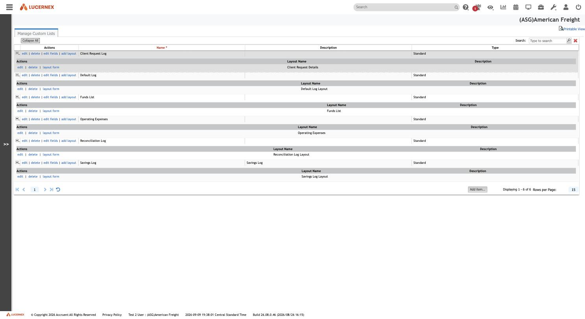
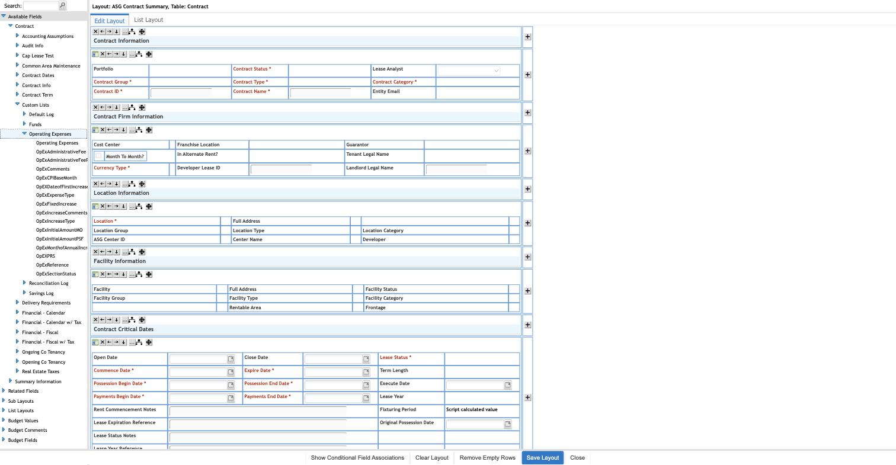
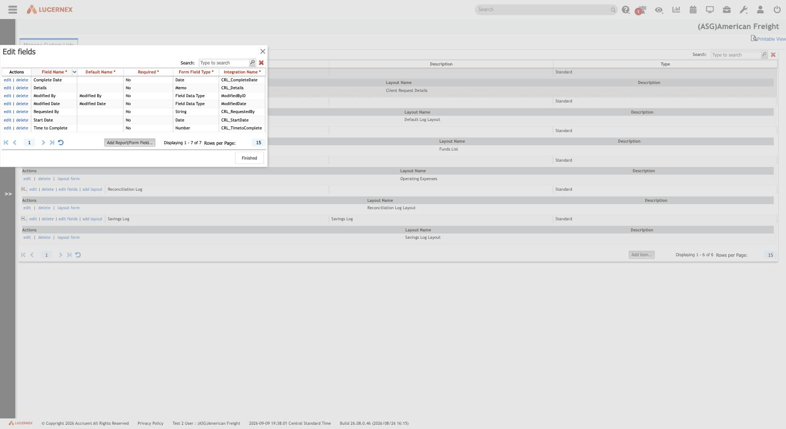

Atlas › Research › Custom Lists — the tenant's own mini record types
The written corpus: feature manuals, module analyses, tenant comparisons, admin tools.
Custom Lists — the tenant's own mini record types
Stated up front. A Custom List is not a picklist. It is a small tenant-authored record type: a named mini-entity with its own field schema and its own page layout, attached to a parent entity and rendered as a grid on that entity's page. The genuine picklist concept lives in Firm and Client Drop Downs. A Custom List is a Form without the workflow — the same Issue-type machinery, with IsWorkFlow off.
The mechanism is one generic backing object plus a per-list field-name prefix. Every custom list field's Lx Script Name reads ClientListRow.<Prefix><FieldName> — CRL_CompleteDate for Client Request Log, OpExAdministrativeFee for Operating Expenses — the same namespacing idea as the Firm_ prefix on firm custom fields (../data-fields/) and the LAR_ prefix on Lease Admin Request's form fields.
One thing does not add up yet, and is flagged rather than smoothed over. The 223-object census gives ClientListRow 24 columns and not one carries a custom-list prefix — no CRL_*, no OpEx* — even though the admin screen names those exact columns. Either the census predates the lists, or custom-list values are not stored on ClientListRow the way the script name implies. See Open questions.
The screen itself is ../../admin/006-manage-custom-lists.md, which this document does not restate.
Five custom lists in American Freight
Observed (006, plus the Available Fields palette of the layout editor in 008):
| Custom list | Primary table | Field prefix | Own layout |
|---|---|---|---|
| Client Request Log | Portfolio | CRL_ | Client Request Details (96279) |
| Default Log | Contract | — | Default Log Layout (96282) |
| Funds | Contract | — | |
| Operating Expenses | Contract | OpEx | |
| Reconciliation Log | Contract | — | |
| Savings Log | Contract | — |
edit | delete | edit fields | add layout -- the same three-part creation a custom list needs: a field namespace, a layout, and a parent binding.">Manage Custom Lists at American Freight. Each row offers edit | delete | edit fields | add layout -- the same three-part creation a custom list needs: a field namespace, a layout, and a parent binding.
{kind=link}
Observed. Expanding Available Fields → Contract → Custom Lists in the layout editor lists exactly the Contract-scoped lists — Default Log, Funds, Operating Expenses, Reconciliation Log, Savings Log. Client Request Log is absent there because its primary table is Portfolio.
Derived. A custom list appears in the Available Fields tree only under the entity it belongs to. The parent binding is real and enforced in the builder, not merely conventional.
Contract -> Custom Lists expanded. Only the Contract-scoped lists appear -- Default Log, Funds, Operating Expenses, Reconciliation Log, Savings Log. Client Request Log is absent because its primary table is Portfolio.">Available Fields tree with Contract -> Custom Lists expanded. Only the Contract-scoped lists appear -- Default Log, Funds, Operating Expenses, Reconciliation Log, Savings Log. Client Request Log is absent because its primary table is Portfolio.
{kind=link}
Observed. Expanding Operating Expenses lists its own leaf fields — OpExAdministrativeFee, OpExComments, OpExCPIBaseMonth, OpExDateofFirstIncrease, OpExExpenseType, OpExFixedIncrease, OpExIncreaseComments, OpExIncreaseType, OpExInitialAmountMO, OpExInitialAmountPSF, OpEXPRS, OpExReference, OpExSectionStatus — confirming the prefix convention generalises beyond Client Request Log.
Derived. A custom list is therefore three things created together: a field namespace, a layout, and a parent binding. Any rebuild that offers only "add a custom field to an entity" cannot express it; a custom list is a child collection, not a set of extra attributes.
A Custom List is a Form without the workflow
Observed. A Form is an Issue Type — TableType=2035 is Issue Type Code, and Manage Forms opens FirmCodeEdit.jsp?…TableType=2035 (../../data-model/code-table-registry.md). The record a Form produces is an Issue.
Observed. CodeIssueType has 19 columns, and they carry the whole behaviour of a form type:
| Column | What it does |
|---|---|
ShortName, ActualLongName | Naming |
IsWorkFlow | Whether this type drives a workflow — the flag that separates a Form from a Custom List |
AutoClose, AllowReply | Lifecycle |
SequencePrefix, IsSequencePerFirm | The record-number prefix, e.g. LAR |
Inactive | Soft delete |
11 × IsValidFor… | The entity attachability matrix |
Observed. The attachability matrix names eleven entity types: IsValidForPortfolio, IsValidForLocation, IsValidForFacility, IsValidForContract, IsValidForEquipContract, IsValidForParcel, IsValidForPrototype, IsValidForPotentialProject, IsValidForCapProgram, IsValidForCapProject, IsValidForOpenProject.
Derived. Attachability is a row of booleans, not a join table — one form type can attach to several entity types, and the set of possible parents is fixed in the schema at eleven. A rebuild should use a proper join table unless it wants a DDL change every time a new entity type appears.
Derived, and it corroborates a separate finding. IsValidForEquipContract exists as a first-class flag, so EquipmentContract is a real entity type in the form model — independent support for the reading in ../equipment-contracts/ that it is a genuine ProjectEntity type rather than a navigation label.
Derived. The Form/Custom List distinction reduces to IsWorkFlow. Two consequences: the Manage Forms and Manage Custom Lists screens are two views over one code table, and BBW's two workflow-less form types (Change Request, QC Request — ../workflows-forms/) are, mechanically, custom lists that happen to be listed under Forms.
flowchart TD
CT["CodeIssueType -- 19 columns<br/>TableType = 2035, Issue Type Code"]
FLAG{"IsWorkFlow"}
FORM["Presented as a FORM<br/>Manage Forms, FirmCodeEdit.jsp<br/>drives a WorkFlowTemplate"]
LIST["Presented as a CUSTOM LIST<br/>Manage Custom Lists, CustomListEdit.jsp<br/>renders as a grid on its parent"]
REC["Both produce an Issue record"]
ATT["11 IsValidFor* boolean columns<br/>Portfolio, Location, Facility, Contract,<br/>EquipContract, Parcel, Prototype,<br/>PotentialProject, CapProgram,<br/>CapProject, OpenProject"]
SEQ["SequencePrefix + IsSequencePerFirm<br/>the record number, e.g. LAR"]
PL["Its own PageLayout<br/>e.g. Client Request Details 96279"]
NS["A field-name prefix<br/>CRL_, OpEx, LAR_"]
CT --> FLAG
FLAG -->|Yes| FORM
FLAG -->|No| LIST
FORM --> REC
LIST --> REC
CT --- ATT
CT --- SEQ
CT --- PL
CT --- NSDerived. Everything except the one boolean is shared. That is why the two admin screens offer an identical row action set, and why a rebuild should build the mechanism once and present it twice rather than modelling forms and custom lists separately.
Note the attachability box is a row of columns, not a join. Eleven IsValidFor* booleans fix the set of possible parents in the schema, so a twelfth entity type is a DDL change. A rebuild should use a join table.
Where the rows live
Observed. Each custom-list field's read-only Lx Script Name in the field editor reads ClientListRow.<IntegrationName> — e.g. ClientListRow.CRL_CompleteDate (006). Derived there: every custom list is layered on one shared generic backing object rather than a table per list.
Client Request Log, seven fields, with the Integration Name column carrying the physical name each field maps to. Five are prefixed -- CRL_CompleteDate, CRL_Details, CRL_RequestedBy, CRL_StartDate, CRL_TimetoComplete -- and two are not: ModifiedByID and ModifiedDate sit in the same list unprefixed. That is the direct evidence that the prefix is a convention rather than something the product enforces. Note also the Required * column, No on all seven.">Edit fields modal on Client Request Log, seven fields, with the Integration Name column carrying the physical name each field maps to. Five are prefixed -- CRL_CompleteDate, CRL_Details, CRL_RequestedBy, CRL_StartDate, CRL_TimetoComplete -- and two are not: ModifiedByID and ModifiedDate sit in the same list unprefixed. That is the direct evidence that the prefix is a convention rather than something the product enforces. Note also the Required * column, No on all seven.
{kind=link}
Observed, (ASG)American Freight, build 26.08.0.46, captured 2026-09-09 — an older build than the 26.09.0.113 the rest of this corpus was captured on. Nothing here is known to have changed between the two, but the difference is recorded rather than smoothed over.
Observed, and it complicates that. The census gives ClientListRow 24 columns:
| Group | Columns |
|---|---|
| Keys | ClientListRowID, ObjectID, CodeSQLTableID (Dropdown (SQL Table Code)), ProjectEntityID, RelatedPEID, ReportGroupAvailableFieldID |
| Generic values | SubValue, SubValue2, SubValue3, SubValue4, SubValue5 — all typed Currency |
| Procurement | PartID, PartQuantity, PartPackageID, PartPackageQuantity, CostPerPart, PurchaseOrderLineSeqNum, SalesVendorID |
| Budget / asset | BudgetColumnItemValueID, BudgetLineItemID, AssetID |
| Plumbing | BOMapClientRecordID, ModifiedByID, ModifiedDate |
Not one of the 24 carries a CRL_ or OpEx prefix.
Two readings, neither confirmed.
| # | Reading | For | Against |
|---|---|---|---|
| 1 | ClientListRow is an EAV row — (CodeSQLTableID, ObjectID, ReportGroupAvailableFieldID) identifies "this field on this object", and the value goes in a SubValue* slot | The key triple is exactly an EAV key, and ReportGroupAvailableFieldID points at the field catalogue | All five value slots are typed Currency, which cannot hold OpExComments or a date |
| 2 | Custom-list fields are real columns added to ClientListRow, named by prefix, and the census simply predates them | It is what the script name ClientListRow.CRL_CompleteDate literally says, and it matches the Firm_ mechanism, which is real columns (../data-fields/) | The census does carry Firm_ columns on other tables, so it is not blind to firm extensions in general |
Reading 2 is the more likely, on the strength of the Firm_ precedent — firm extensions in this product are physical columns, and a custom list is a firm extension. But the census's silence is unexplained either way, and the procurement and budget columns suggest ClientListRow also serves purposes unrelated to custom lists. Recorded as open rather than resolved.
A per-field physical mapping is now available, and it cuts against the analogy rather than for it. ../../data-model/pg/bbw-field-inventory.csv carries a PG Table / PG Column pair for every field in the census:
| In the inventory | Physical column of the same name | |
|---|---|---|
Firm_* fields | 311 across 23 tables | 295 |
CRL_*, OpEx*, LAR_* fields | 0 | — |
ClientListRow's own columns | 24 | 24, none prefixed |
Derived. The Firm_ precedent reading 2 leans on is now confirmed at the level of individual columns — a firm extension really is a real, same-named column on the entity's own table (../data-fields/). ClientListRow demonstrably does not do that. So the two firm-extension mechanisms are not the same mechanism, and "custom lists work like Firm_ fields because both are firm extensions" is a weaker argument than it looked.
Do not count this as a second witness, and this caveat is the point. The inventory is the same export as the 223-object census — 222 objects and 7,368 fields against 223 and 7,421, the same
Firm_names, the same absentCRL_ones. It states the census's silence more precisely; it does not independently confirm it. Two readings of one source are still one source, and this document's whole difficulty is that the source is silent.
Carry one more caveat if you cite that file. Its PG Table Status column describes a replication loader's coverage of lxr_drp_bbw, not Lx's schema. All 24 ClientListRow columns read Not created yet — no data, which means the loader has not built that table — not that the rows do not exist. ProjectEntity shows the same status on 107 of 108 fields in a tenant with thousands of contracts, which is proof that the status column cannot be read as a statement about the product.
The test is unchanged and still cheap: deep-serialise one custom-list row through REST. A returned CRL_CompleteDate settles reading 2; a returned SubValue3 settles reading 1. No offline artefact can answer it, because every offline artefact traces to the one export that omits these fields.
The test, and it needs no UI: deep-serialise one custom-list row — GET /rest/businessObject/ClientListRow/lxid/{id}?deep=true. The REST serializer emits populated columns under their physical names, so a returned CRL_CompleteDate settles it for reading 2 and a returned SubValue3 settles it for reading 1. Same method that recovered the layout engine (../page-layouts/).
What this means for ASG Edge+
| Finding | Consequence |
|---|---|
| A custom list is a mini record type, not a picklist | Do not map it onto Masters. It is a child collection with its own schema and layout |
Custom List and Form differ only by IsWorkFlow | One mechanism, one table, two admin screens. Build it once |
| Fields are namespaced by a per-list prefix | Adopt a namespace deliberately — Lx's is a naming convention with nothing enforcing it |
| Attachability is 11 boolean columns | Use a join table; booleans need a DDL change per new entity type |
IsValidForEquipContract is first-class | Corroborates EquipmentContract as a real entity type |
| Each list gets its own page layout | The layout registry must accept tenant-created record types as primary tables |
| Storage mechanism unresolved | Settle it before designing the ASG Edge+ equivalent — EAV and real-columns have opposite migration and tenancy consequences |
Open questions
- Are custom-list values real columns on
ClientListRow, or EAV rows inSubValue*? The two readings above. One REST call decides it. Highest priority here — if it is real columns, a custom list is a DDL operation and inherits the database-per-tenant consequence described in../data-fields/; if it is EAV, it does not. - Why does
ClientListRowcarry procurement and budget columns (PartID,CostPerPart,PurchaseOrderLineSeqNum,BudgetLineItemID)? Either the object is shared with the parts/budget subsystem, or "custom list" originated as a line-item mechanism and was generalised. - Can a custom list have a workflow?
IsWorkFlowis the only difference from a Form, so structurally yes. Whether the Manage Custom Lists screen exposes the flag is unobserved. - How many fields can a list have? If reading 1 is right, five
SubValueslots would be a hard cap — but Operating Expenses already shows 13 fields, which argues against it. - Does BBW carry the same five lists? The custom-list inventory has only ever been read at American Freight. BBW is the more advanced fork.
Is the field prefix enforced or conventional?Answered — conventional. TheEdit fieldsmodal onClient Request Logshows seven fields, five prefixedCRL_and two (ModifiedByID,ModifiedDate) not, in the same list (screenshot above). Nothing enforces the namespace, which is exactly the defect a rebuild should not copy.